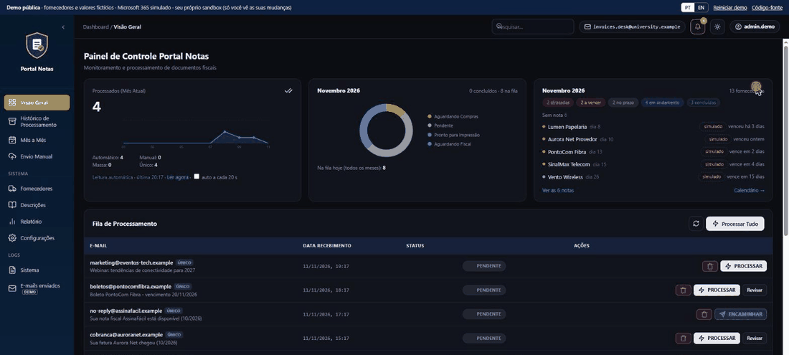

Automação de documentos fiscais e extração inteligenteTax document automation & intelligent extraction
Sistema back-end ponta a ponta que automatiza o recebimento de faturas de fornecedores. As faturas chegam em caixas de e-mail compartilhadas (Microsoft Graph), passam por um fluxo de aprovação (Compras ou direto ao Fiscal), são extraídas com leitura de PDF, OCR e regras de fornecedor configuráveis, arquivadas no SharePoint, e o Financeiro recebe uma planilha consolidada. Em produção diária: cerca de 50 notas por mês de ~30 fornecedores, com cerca de 85% menos trabalho manual (estimativa minha).
Foco de engenharia: extrações com baixa confiança vão para uma fila de revisão humana em vez de serem adivinhadas. Um LLM local só ajuda a cadastrar fornecedores novos, então as faturas nunca saem da rede.
End-to-end back-end system that automates supplier invoice intake. Invoices arrive in shared mailboxes (Microsoft Graph), go through an approval workflow (Purchasing or straight to Fiscal), are extracted with PDF parsing, OCR and config-driven supplier rules, archived to SharePoint, and Finance gets a consolidated spreadsheet. In daily production: about 50 invoices a month from ~30 suppliers, with about 85% less manual work (my estimate).
Engineering focus: low-confidence extractions go to a human review queue instead of being guessed. A local LLM only helps register new suppliers, so invoices never leave the network.
Abrir a demo ao vivoOpen the live demo · RepositórioRepository